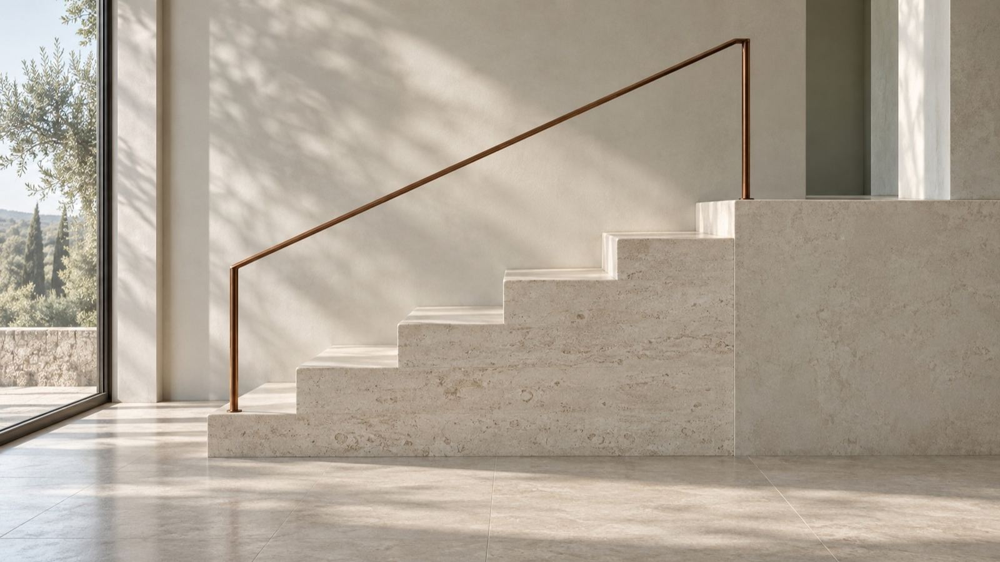
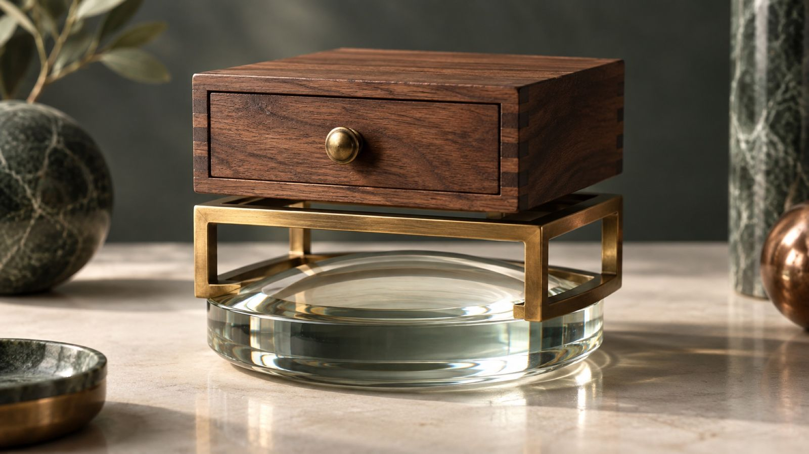
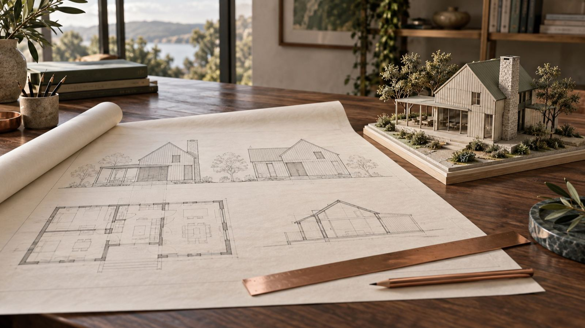

Урок 6 · персональное сопровождение · 17 октября 2026
Как делается
продукт.
Сначала заказ, потом код.
И наставник, который знает твою цель.
Сначала заказ, потом код.
И наставник, который знает твою цель.
Каждый урок стоит на предыдущем. Сегодня шестая ступень из восьми.
Персонализация, промпт-инженерия, ассистенты под одну функцию.
Окружение, AGENTS.md, GitHub, свои и готовые навыки.
Продукт по шагам в Codex. Наставник и презентации в Gemini и NotebookLM.

Распаковка, заказ, разведка, план
Код, проверка, живая ссылка
Gemini помнит, NotebookLM знает
Текст, документ, слайды, стиль
Заказ, разведка, план.
Потом код.

«Сделай приложение, посмотрим»: агент додумывает сам и попадает мимо. Так были сделаны приложения на уроке 4.
Тот же агент, только по кругу и с проверками: заказ, разведка, план, сборка, проверка, публикация. И снова.
Что строим и что не строим.
Что уже есть на GitHub и рынке.
plan.md, кода ещё нет.
index.html строго по плану.
Таблица: что проверил и починил.
Открывается с телефона.
Один чат на весь блок. Codex думает, собирает и сам себя проверяет.
Задаёт вопросы и пишет план. Код только после твоего «да».
Собирает по плану, а не по догадке.
Проходит по «Готово, когда» и чинит минимальной правкой.
Поручения из протоколов совещаний: кто, что, к какому сроку, что просрочено.
Этапы, ответственные, сроки. Красное видно с первого взгляда.
Что пришло, на что ответить и до какого числа.
Список по объекту: кто устраняет, срок, статус, фото.
Несколько отчётов на входе, одна страница главного на выходе.
Два файла из разных систем рядом, расхождения подсвечены.
Риск, вероятность, ущерб, владелец, что делаем.
Что решили, когда, кто, почему. Поиск по слову.
Участники, время, деньги, решения на выходе.
Кто где и когда, пересечения и дыры в команде.

Сделал.
Проверил.
Починил.
Агент проходит по разделу «Готово, когда» как пользователь, смотрит код на ошибки и безопасность и чинит минимальной правкой.

Папка окружения и новый чат.
«Три самые больные задачи, по приложению на каждую».
«Как рекомендуешь и почему».
«Держи размер первой версии».
«Стоп. Сначала plan.md».
Новый чат: «прочитай заказ и план, продолжаем».
Gemini помнит тебя.
NotebookLM отвечает по источникам.
Забираем досье одним промптом
Вставляем в «Мои инструкции»
Проверка: что ты обо мне знаешь
 Gemini · Мои инструкцииGemini · Gem-боты
Gemini · Мои инструкцииGemini · Gem-боты
Ровно та, ради которой собирал.
Что-то не сходится: заметил или нет.
Не знает ответа: спрашивает, а не выдумывает.
Эксперт с сотнями роликов и книг становится собеседником, который разбирает твои задачи его методом.
Ролики, книги, статьи в один блокнот NotebookLM.
Метод, принципы, вопросы, манера. Со ссылками.
Инструкция из портрета, блокнот в базе знаний.
Сначала слова, потом слайды.
Стиль решаешь ты.
Gemini собирает текст по слайдам
Google Документ, один источник
Библиотека или образец
NotebookLM делает слайды, правка словами
NotebookLM по природе суммаризатор: твой материал сожмётся до общих слов.
Один слайд текста = один слайд презентации. Заголовки и тезисы остаются твоими.
18 стилей с превью: копируешь английскую версию.
Скриншоты образца → промпт стиля до 1 800 знаков.
Один текст в двух стилях, оставляешь лучший.
«Изменить» → выбрал слайд → написал, что поменять. Остальные слайды не трогаются.
Сократи текст до трёх тезисов, каждый не длиннее восьми слов.
Покажи сроки этапов лентой времени слева направо.
Сделай финальный слайд: решения, которые нужны от руководства.
Заказ, план, проверка, ссылка. Метод на любой следующий продукт.
Gem-бот под цель и наставник по материалам эксперта.
Текст, документ, NotebookLM, стиль, правка.

Шпаргалка остаётся у тебя.
Все промпты копируются кнопкой.